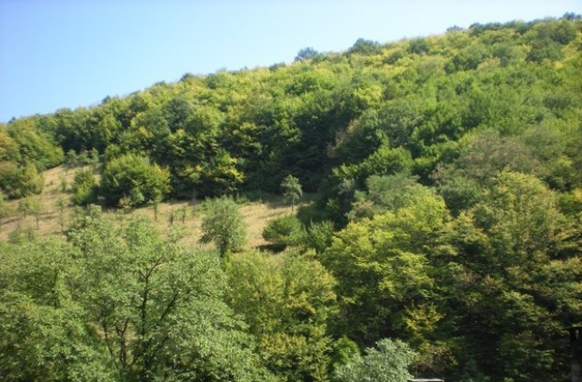

Природен парк - Българка
 „Българка“ е природен парк в България. Паркът е разположен по северните склонове на Стара планина и заема територии в централния и източния дял на Стара планина. Паркът обхваща част от територията на общините Габрово и Трявна. Районът се характеризира с голямо разнообразие в релефа. Характерни за района са историческите забележителности, които се дължат на граничната роля на Стара планина в историята на Балканския полуостров.
Голямото релефно разнообразие се дължи на местоположението на природния парк. Той заема териториите на прехода между стръмния релеф на Централния Балкан и значително по-ниския и полегат източен дял на Стара планина. Това разнообразие в релефа предполага и голямото разнообразие във флората и фауната на района. Това, както и особеното историческо значение на тези части от Стара планина довеждат до обявяването на местността за природен парк.
В границите на Природен парк „Българка“ се намира горното течение и изворите на река Янтра, както и на нейните основни притоци. Площта на природния парк е 21 772 хектара като в парка са включени и землищата на девет населени места от общините Габрово и Трявна.
Природен парк „Българка“ е обявен на 9 август 2002 г. с цел опазването на характерните за Стара планина букови екосистеми, както и заради културно-историческото значение на района.
Предложения за хотели в Природен парк Българка.